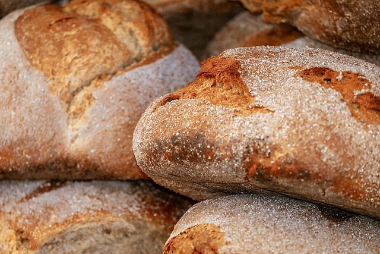

Home

Pan Cubano Bread Recipe
Description:
This is a simple bread recipe to make some Pan Cubano bread.
Ingredients:
- 480g bread flour
- 260g water
- 56g lard
- 12g salt
- 8g sugar
- 7.5g instant yeast
- 4g dried rosemary
Steps:
- Mix bread flour, lard, sugar, dried rosemary, and yeast in a bowl.
- Use a mixer with a bread hook to stir the dough as you add the salt and water in.
- Continue to mix for around 20 minutes.
- Cover the bowl and leave to rise for 1 hour.
- Take the dough out onto a non-stick sheet and press the dough into a 12" x 8" rectangle.
- Roll the dough up into a log and pinch the seam.
- Put the dough log onto a pan and cover in non-stick wrap.
- Leave the dough to rise again at room-temp for 30 minutes.
- Take the wrap off and put the dough into an oven set to 400F for 20 - 25 minutes.
- Take the bread out and leave it to cool for an hour.